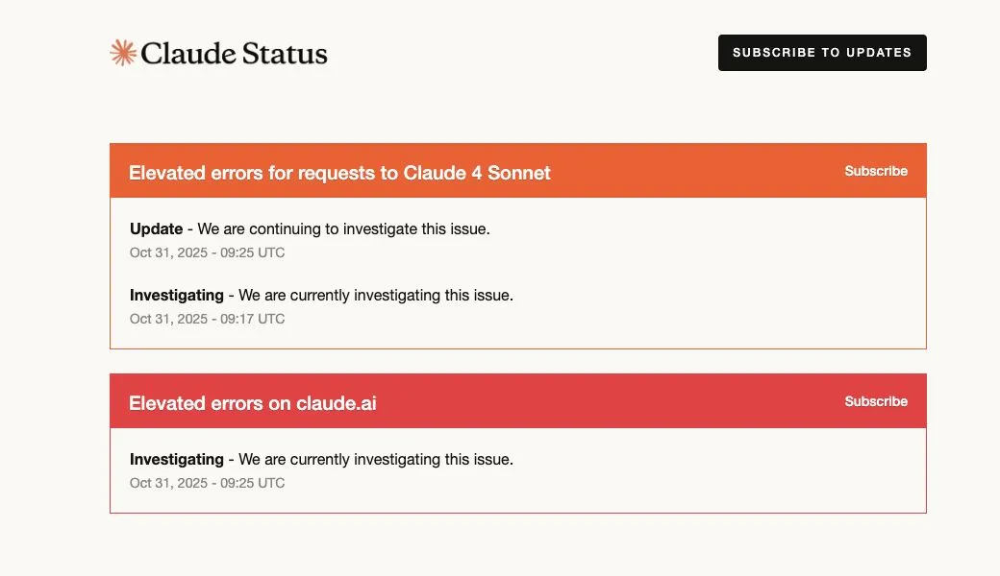

AI changes the tools, not the engineering problems
Originally posted on LinkedIn, July 1, 2026.
"Are you serious? We talked about this exactly 10 years ago."
That hit me in the middle of a conversation with an old friend about AI memory, or more precisely, why AI "forgets" things during a conversation. He described how the context window works, and I heard "RAM management." Anything inside the context window is immediately available to the model. Anything outside it does not exist from the model’s perspective, just like working memory in regular software.
The same ideas keep coming back, including in the AI shift. RAG is loading from a hard drive, with the same challenges that come with it. Conversation summarization is lossy compression. Prompt caching is a classic cache. Sliding window is a ring buffer. These concepts have existed for decades. Only the names are new.
This is not limited to infrastructure. Every new technology brings the same discussions back. When Angular arrived, people argued about state management, separation of concerns, and component architecture. Those exact debates had existed for years in other contexts. Now AI has brought them back again: what to keep, what to discard, what to index, and what to retrieve. Software engineers have been solving these questions for generations.
This is also a useful way to think. Once you understand that the context window behaves like working memory, you can predict which features will come next because you already know the problems and solutions from traditional software. Being a senior developer has its advantages.
What changes even less, and is easier to lose sight of, is basic software engineering practice. Because AI speeds up development, those practices matter more than ever.
The data from 2025 and 2026 is clear: code generated with AI contains more bugs, PR review time increases significantly, and readability problems appear more often. The DORA report showed this most clearly. AI is an amplifier. Teams with strong processes become stronger. Teams with weak processes become weaker.
Writing production ready code with AI is the same challenge as writing it without AI. We need small, readable PRs. We need SOLID principles to optimize the context available to the agent working on the code. We need to think about scale in production when serving thousands or millions of customers, something models still do not have enough context for. We need to plan and share work with the team so we get multiple perspectives, each person bringing their own area of expertise, and cover everything that cannot realistically fit into the agent’s context.
The practices that form the basis of good software development have not changed. The illusion that we no longer write code is true only for the act of writing it. Maintaining code requires synchronization between machine and human, with the goal of reducing that expensive, slow interface through high-Trust layers.
The technology changes. The bugs remain. Back to work.
